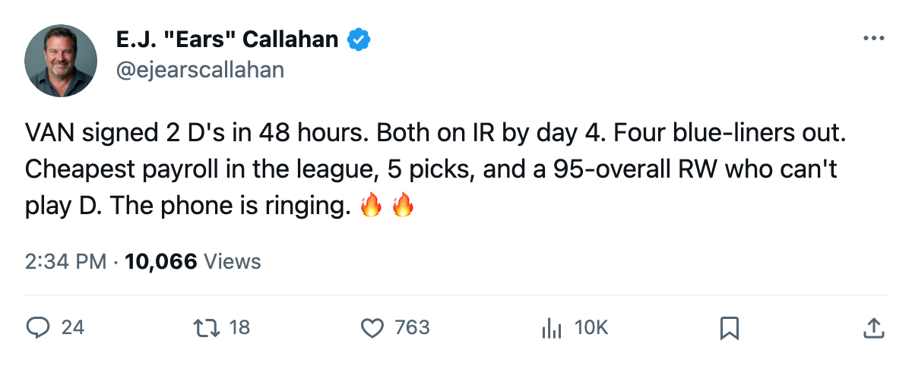
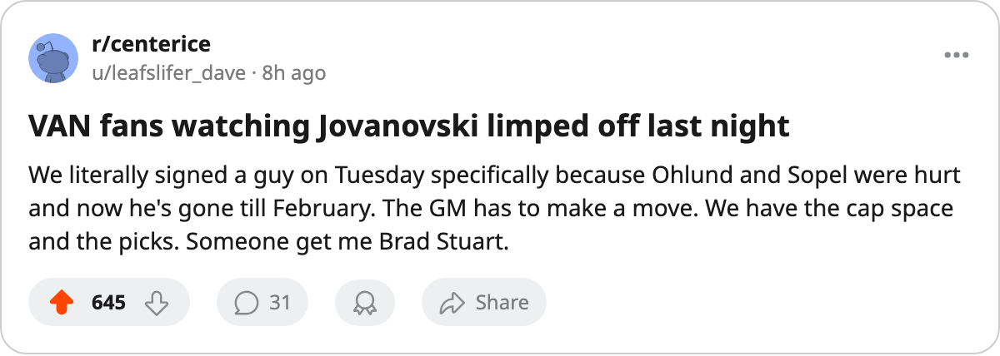

RUMOR METER: Vancouver's Blue Line Just Collapsed. They Have to Buy. 🔥🔥
Two defensemen signed within 24 hours, both on the shelf. The cheapest club in the league is now forced to shop.
 E.J. "Ears" CallahanInsider · The Hot Stove
E.J. "Ears" CallahanInsider · The Hot Stove

Rumour

 Vancouver Canucks signed
Vancouver Canucks signed  Ed Jovanovski87 for $482,170 on December 2. Two days later, Jovanovski was on the injured list, out until 2005-02-19. He was supposed to fix a blue line that already held
Ed Jovanovski87 for $482,170 on December 2. Two days later, Jovanovski was on the injured list, out until 2005-02-19. He was supposed to fix a blue line that already held  Mattias Ohlund82 (out through 2004-12-14) and
Mattias Ohlund82 (out through 2004-12-14) and  Brent Sopel79 (out through 2004-12-23). He was supposed to pair with
Brent Sopel79 (out through 2004-12-23). He was supposed to pair with  Bryan Allen77, who signed on December 1 for $134,590 and hit the shelf sometime between December 4 and today, back on December 12.
Bryan Allen77, who signed on December 1 for $134,590 and hit the shelf sometime between December 4 and today, back on December 12.
Four defensemen on the injured list, the worst defensive depth chart in the Northwest division.
VAN sits at 14-8-2, 34 points, tied with  Edmonton Oilers for second in the division, 10 points behind
Edmonton Oilers for second in the division, 10 points behind  Colorado Avalanche's 44. They are on a 2-game skid.
Colorado Avalanche's 44. They are on a 2-game skid.  Todd Bertuzzi95 has 45 points in 26 games and a 95 overall grade.
Todd Bertuzzi95 has 45 points in 26 games and a 95 overall grade.  Brendan Morrison84 carries 100 morale and 84 overall. The front office built a scoring team. The back end is now held together by whoever the coach puts out third on the depth chart.
Brendan Morrison84 carries 100 morale and 84 overall. The front office built a scoring team. The back end is now held together by whoever the coach puts out third on the depth chart.
League sources around the Pacific division say VAN has been making calls for a top-4 defenseman since Tuesday. They've got the payroll ($34.94M, lowest in the league, $1.03M per point), 5 draft picks, $21.93M in profit, and pressure.
The one name that makes sense
 Brad Stuart87, 25, plays for
Brad Stuart87, 25, plays for  San Jose Sharks at $1.80M on an expiring deal. 87 overall, 18 points in 25 games, 94 morale. San Jose is 9-11-2 with 26 points and a losing streak. They are not a playoff team this year, and Stuart will walk in July. A contender with picks and $1.80M to absorb: that's the fit.
San Jose Sharks at $1.80M on an expiring deal. 87 overall, 18 points in 25 games, 94 morale. San Jose is 9-11-2 with 26 points and a losing streak. They are not a playoff team this year, and Stuart will walk in July. A contender with picks and $1.80M to absorb: that's the fit.
SJ's payroll sits at $42.18M against $41.09M in revenue. Shedding $1.80M for a pick package is rational. Stuart's morale at 94 means he won't force a no-trade clause; a 25-year-old defenseman on a winning team has no reason to object.
The asking price, per a man who would know: a 2nd-round pick and a depth forward or a low-3rd. VAN holds 5 picks, 1 first. They can pay that.
The market read
VAN is not the only club with a blue-line problem, but they are the only one with the cheapest payroll in the league and the most immediate desperation. Ohlund returns in 7 days. Allen returns in 5. If VAN can bridge this stretch with one rental D, the depth chart heals by late December. If they wait and lose another game, the window to trade for a contender's castoff narrows.
The phone is ringing in Vancouver. Someone's going to answer.

